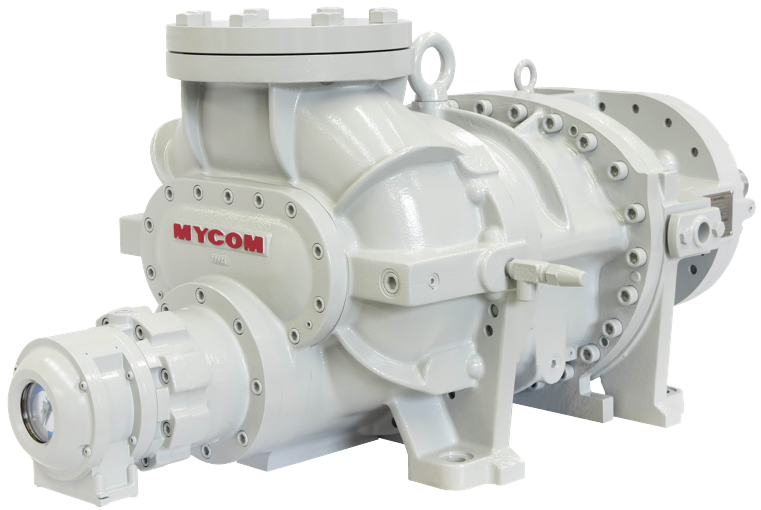
-
MYCOM
SCREW
COMPRESSOR - J-series
- 마이콤 컴프레서는 새롭게 설계된 고성능 단일 스테이지 시리즈로, 총 9개의 모델을 제공합니다. 이 제품은 천연 냉매인 암모니아, CO2, 프로판을 비롯하여 불소화합물 냉매와도 호환이 가능합니다. 또한, 낮은 진동과 저소음 설계를 통해 더욱 정숙한 운전 환경을 제공하며, 100%에서 25%까지의 범위에서 무단계 용량 제어가 가능하여 다양한 운영 조건에서도 효율적인 성능을 발휘합니다.
SCREW COMPRESSOR
SINGLE STAGE
-
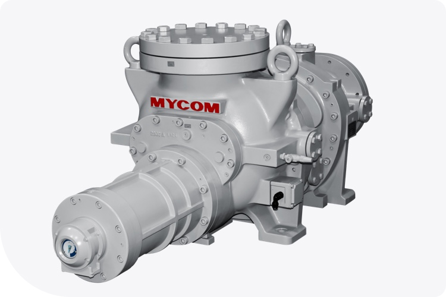
- J-series
- 혁신적인 단일 스테이지 압축기로, 천연 및 불소화합물
냉매와 호환되는 고성능 컴프레셔 모델 - 새로운 유형의 로터로 높은 성능
- 새롭게 디자인된 고성능 단일 스테이지 시리즈(9모델)
- 천연(암모니아, CO2, 프로판) 및 불소화합물 냉매와 호환
- 낮은 진동 및 낮은 소음
- 100~25% 범위에서 무단계 용량 제어
-
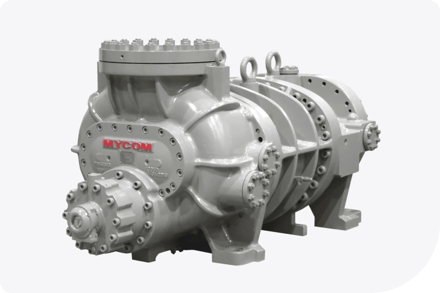
- UD-series
- 소형부터 대형까지 다양한 용량 범위를 커버하며
여러 냉매를 처리할 수 있는 스크류 컴프레셔 모델 - 최대 15,600m³/h1 (9,180CFM2)의 대용량 압축기 라인업
*1 2,950rpm 기준, *2 3,550rpm 기준 - 넓은 온도 범위에서 작동하며 산업용 냉동 애플리케이션에 적합
- 자연 냉매(암모니아, 프로판)와 불화탄소 냉매와 호환
- 검증된 4:6 로터 사용
-
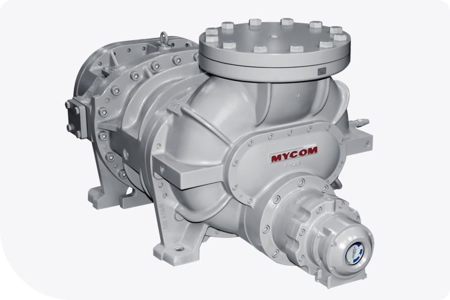
- SCV-series
- 다양한 용도에 적합한 고성능의 컴프레셔 모델
- 13개 모델 제공, 415에서 4,740m³/h1 (244에서 2,790CFM2)의
광범위한 배기량 커버 - 2.63에서 5.80 범위의 가변 VI 메커니즘으로 넓은 온도 범위를 효율적으로 대응
- 넓은 온도 범위에서 작동하며 산업용 냉동 및 공기 조절 애플리케이션에 적합
- 자연 냉매(암모니아, 프로판)와 불화탄소 냉매와 호환
- 검증된 4:6 로터 사용
CAPACITY RANGE
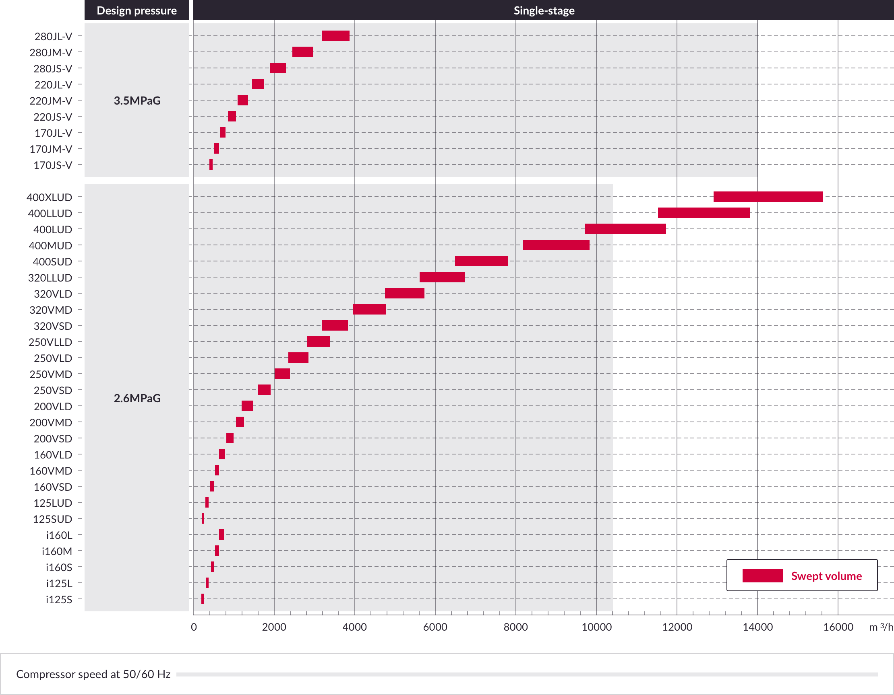SCREW COMPRESSOR
COMPOUND STAGE
-
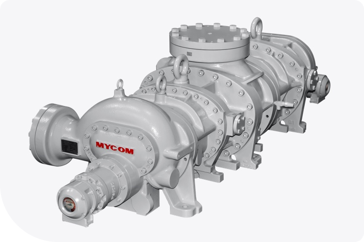
- C-series
- 저온 애플리케이션에서 1위 기록을 유지하는
고효율 이단기 컴프레셔 - 저온 범위를 효율적으로 커버하는 단일 기계 이단 압축
- 622에서 9,700m³/h1 (441에서 5,709CFM2)의
배기량을 커버하는 5개 모델 제공 - 하나의 모터와 MYCOM 오리지널 설계 기반의 오일 세퍼레이터로 운영
- 검증된 4:6 로터 구성
-
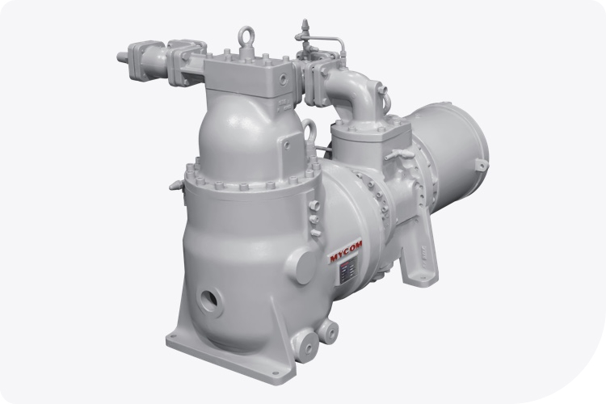
- MHS-series
- 저온 애플리케이션용 소형 이단기 컴프레셔 모델
- 수냉식 반밀폐 모터와 MYCOM 고유의 로터 설계로 높은 효율성 구현
- 통합된 반밀폐 모터와 오일 세퍼레이터 설계로 구현된 콤팩트한 패키지
- 저진동 및 저소음
CAPACITY RANGE
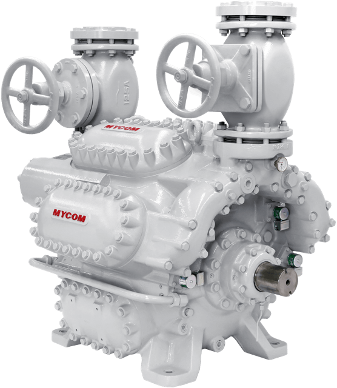
-
MYCOM
RECIPROCATING
COMPRESSOR - M II-series
- 한국마이콤의 레시프로 컴프레서는 정밀한 설계와 고품질 소재를 적용하여 탁월한 내구성과 안정적인 성능을 제공합니다. 피스톤의 왕복 운동을 통해 압축을 수행하는 이 제품은 고효율 운전이 가능하며, 냉동 및 공기 조화 시스템에서 최적의 성능을 발휘합니다. 또한, 다양한 냉매와의 호환성을 갖추고 있어 산업 전반에서 폭넓게 활용되고 있으며, 사용자의 요구에 맞춘 다양한 용량 및 모델 옵션을 제공합니다. 저진동·저소음 설계를 적용하여 운전 환경을 개선하고 유지보수 비용을 최소화할 수 있습니다.
RECIPROCATING
COMPRESSOR
SINGLE STAGE
-

- M II-series
- 성능, 내구성, 고압 저항성에서 탁월한 차세대
에너지 절감형 컴프레셔 - 새로운 설계로 고성능 구현
- 대폭 개선된 점검 주기
- 자연 냉매(암모니아, 프로판)와 불화탄소 냉매 호환
- 다양한 압력 조건 지원
- 간편한 유지보수
-
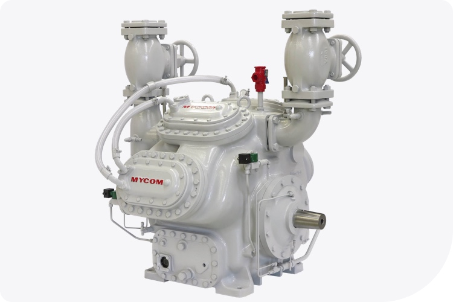
- WBHE-series
- 세계적으로 15,000대 이상 사용되며 신뢰와 성능이 입증된 대형 단단기 시리즈 모델
- 성능이 향상된 새로운 설계
- 불화탄소 냉매용 공랭식 응축 장치에 적합한 고압 설계
- 자연 냉매(암모니아, 프로판)와 불화탄소 냉매 호환
- 부하 변동에 유연하게 대응
-
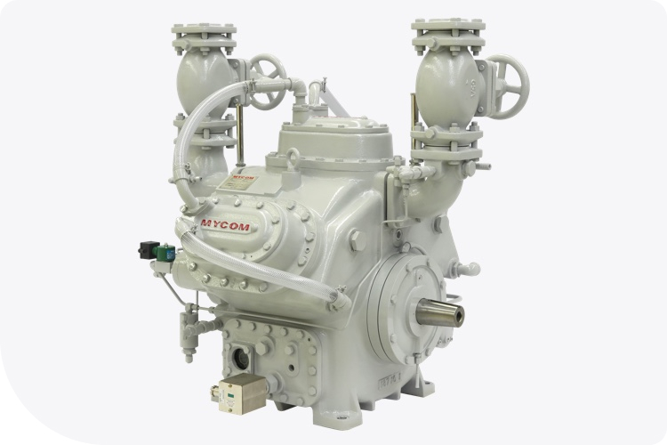
- WA-series
- 다양한 용도에 적합한 중형 단단기 시리즈로, 뛰어난
성능을 자랑하는 모델 - 불화탄소 냉매용 공랭식 응축 장치에 적합한 고압 설계
- 자연 냉매(암모니아, 프로판)와 불화탄소 냉매 호환
- 부하 변동에 유연하게 대응
CAPACITY RANGE
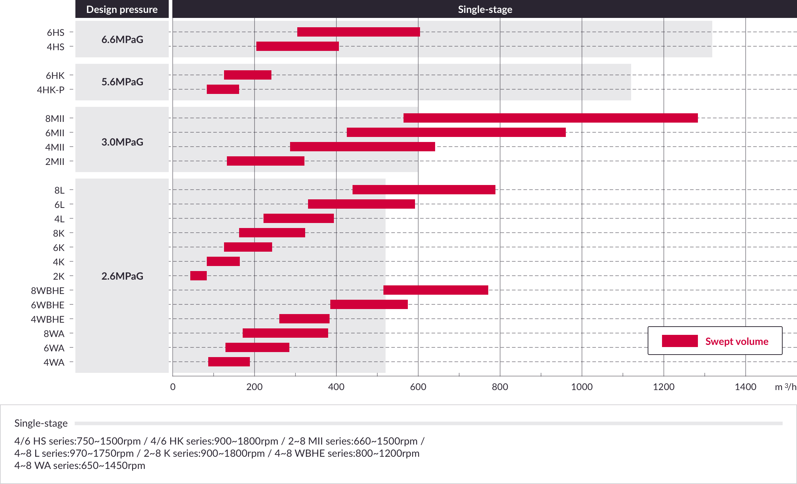RECIPROCATING COMPRESSOR
COMPOUND STAGE
-
.jpg)
- M II-series
- 성능, 내구성, 고압 저항성에서 탁월한 차세대
에너지 절감형 컴프레셔 - 대규모 심층 냉동 애플리케이션용 모델
- 새로운 설계로 고성능 구현
- 대폭 개선된 점검 주기
- 자연 냉매(암모니아, 프로판)와 불화탄소 냉매 호환
- 간편한 유지보수
-
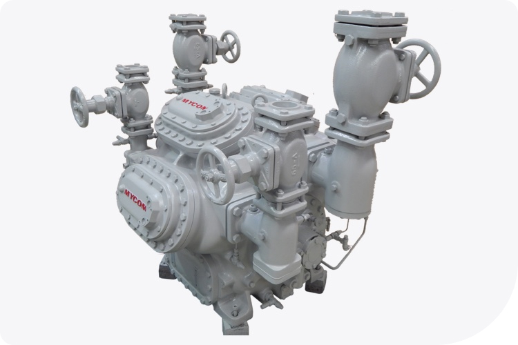
- WBHE-series
- 세계적으로 15,000대 이상 사용되며 신뢰와 성능이 입증된 대형 이단기 시리즈 모델
- 대규모 심층 냉동 애플리케이션용 모델
- 불화탄소 냉매용 공랭식 응축 장치에 적합한 고압 설계
- 자연 냉매(암모니아)와 불화탄소 냉매 호환
- 부하 변동에 유연하게 대응
CAPACITY RANGE
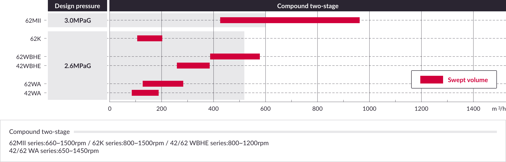
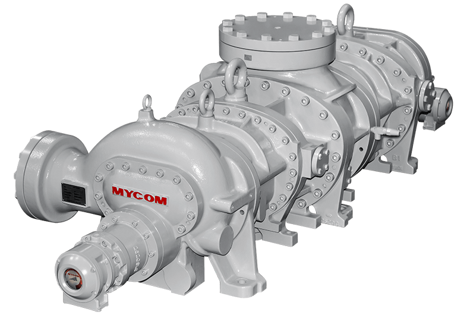
-
MYCOM
SPECIAL
COMPRESSOR - UD-series
- 한국마이콤의 특수용 컴프레셔는 고객의 특수한 요구 사항을 충족하기 위해 맞춤형으로 설계된 고성능 압축기입니다. 극한의 환경 조건에서도 안정적으로 작동할 수 있도록 견고한 구조와 최첨단 기술이 적용되었으며, 해양, 플랜트, 초저온 냉동 및 특수 산업 공정에 최적화되어 있습니다. 특히, 친환경 냉매를 적용한 고효율 솔루션을 제공하여 에너지 절감과 환경 보호를 동시에 실현할 수 있습니다. 한국마이콤의 특수용 컴프레셔는 정밀한 성능과 높은 신뢰성을 바탕으로 다양한 산업의 핵심 장비로 활용되고 있습니다.
SPECIAL COMPRESSOR
SINGLE STAGE
-
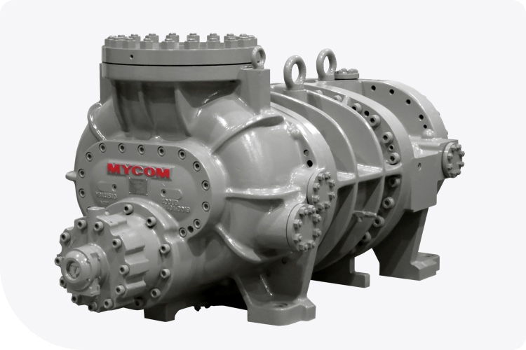
- UD-series
- 주물 강철 케이싱 기본 모델로, 4x6 로터 로브가 최적 성능 보장하는 컴프레셔 모델
- 냉동 및 산업 분야에서 광범위한 용량 처리 가능
- 다양한 작동 압력 조건에 최적화
- API619 국제 표준 준수
- 산업용 압축기 설계의 높은 신뢰성 제공
-
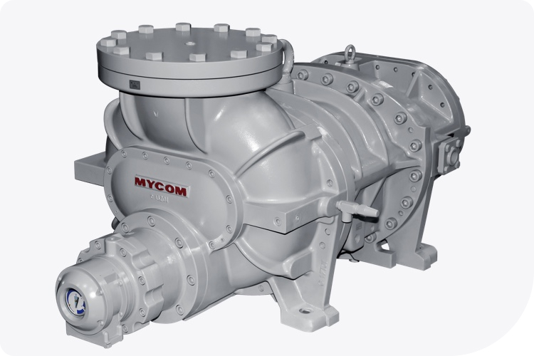
- SCV-series
- 주물 철 케이싱의 다양한 모델과 가변 VI로 여러 압력 조건 대응 가능한 컴프레셔 모델
- 2.63에서 5.80 범위의 가변 VI 메커니즘으로 온도 변화에 효율적으로 대응
- 산업 냉동 및 공기 조절 분야의 다양한 용량 요구 충족
- 광범위한 작동 압력 범위 지원
- 오랜 기간 시장에서 인정받은 베스트셀러 모델
-
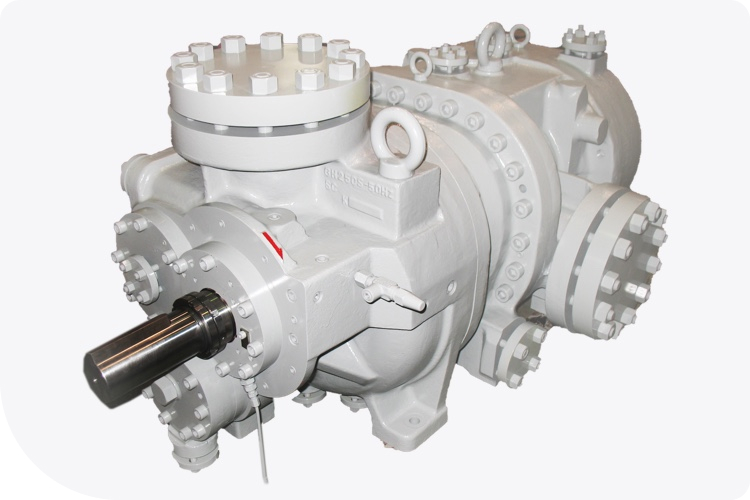
- GH-series
- API619 요구사항을 충족하는 고압 모델
- 고압 환경에서의 뛰어난 성능
- 최적화된 설계로 높은 에너지 효율성 구현
- 광범위한 작동 압력 조건 지원
- API619 국제 표준 준수
CAPACITY RANGE
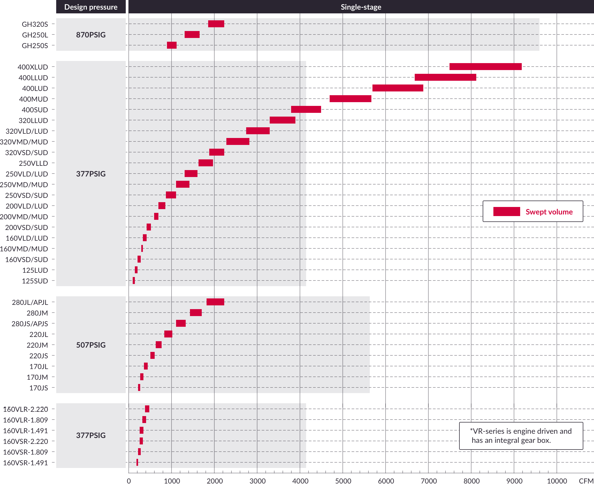SPECIAL COMPRESSOR
COMPOUND STAGE
-
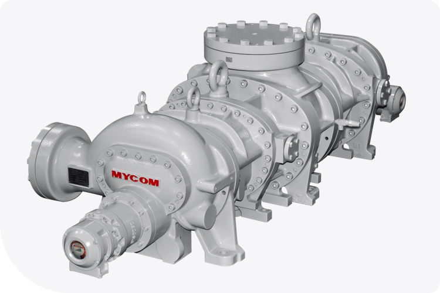
- C-series
- 단일 드라이버와 윤활 시스템으로 공간과 비용 절감을 위한 단일 케이싱 이단 압축기
- 단일 압축기에서 고압축비를 위한 효율적인 이단 압축 기술
- 다양한 산업 환경에 대응하는 폭넓은 모델 라인업
- 광범위한 작동 압력 범위 제공
- API619 국제 표준 준수
CAPACITY RANGE
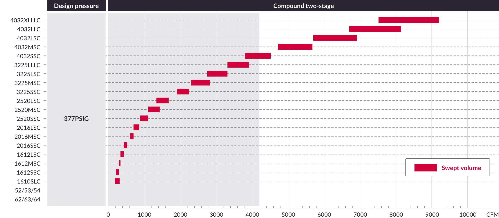